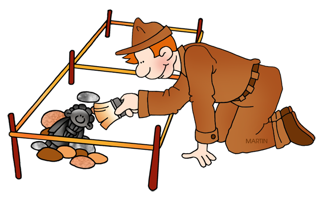
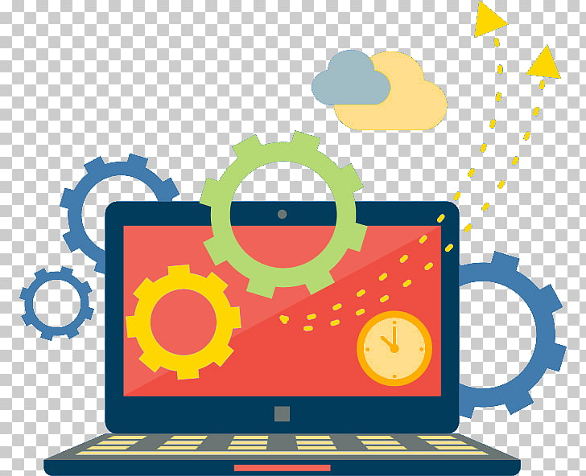
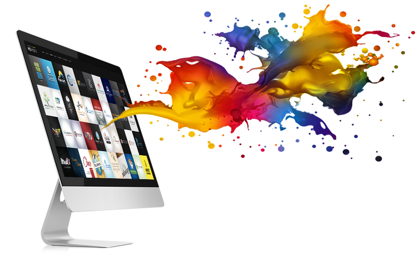

Want to know more? Let’s talk!
nicole.y.osborn@gmail.comMy life has been a journey of wandering intellectual interests with no clear indication of where it was heading. That is, until a few years ago when I discovered User Experience Design and realized that this was where I was meant to be all along.
When I started college, I found every topic so fascinating, I wanted to take every 101 course I could! I filled my schedule with intro courses - Geology, Art History, World Religions, Chemistry, Psychology, Anthropology, Forestry, Calculus and Spanish - until my counselor told me I would have to choose a major. I chose Anthropology because within it were so many fascinating topics - Archaeology, Ethnography, Linguistics, Primatology and Physical/Biological Anthropology! I loved learning about how culture influences human behavior, but I knew it would not be my career.
Years later, while working at University of Phoenix, I could not resist the appeal of taking courses with my employee discount. I earned a Master of Science in Psychology, and loved studying how the human mind works! But I knew I did not want a career as a counselor or psychologist.
A few years after that I got the itch to take more courses, and I was fascinated by computers and technology, so I signed up for an A+ Fundamentals certificate program. I enjoyed that so much, I decided I might as well go for the Associate of Arts in Information Technology! Within that program I earned a certificate in Database Management. It was my first introduction to programming using SQL, and I loved figuring out how to solve problems with code. But I knew I didn't really want a career in database management.
After a few years, when I needed some more intellectual stimulation, I returned to coding but this time I took a free course from Google on Android development. I was able to create fun little games and put them on my phone! Now, that was fun!
It was at that point that I began researching Web Development programs, and came across something called UX Design. When I discovered that this is a career that requires the desire to understand people and their needs and motivation (Anthropology and Psychology!), and it involves creating apps and websites to fulfill people's needs (coding and technology!), and it is a career that is always bringing new challenges and new things to learn about, I knew I had finally found my calling!
I started taking courses at Interaction Design Foundation and absolutely loved it! I enrolled in Lambda School to study UX Design, and went on to also complete the Web Development program as well. And the rest, as they say, is history!
So if you are looking for a UX Designer or Web Developer with an insatiable thirst for knowledge and a desire to create delightful experiences, then look no further! I am ready for the next big adventure!
Want to know more? Let’s talk!
nicole.y.osborn@gmail.com